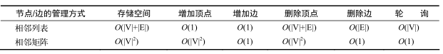
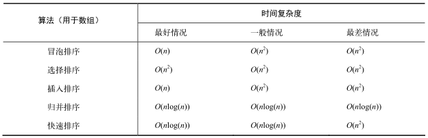
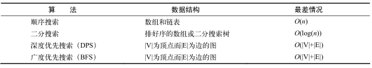

学习JavaScript数据结构与算法笔记
《学习JavaScript数据结构与算法》 笔记，以下为使用ES5的语法
- 数组
- 栈
- 队列
- 链表
- 集合
- 字典和散列表
- 树
- 图
- 排序和搜索算法
- 其他：动态规划，贪心算法
使用ES6语法，更全，讲解更清晰，建议观看
Classic and high performance data structures implemented in javascript
数组
- 添加和删除元素
- 使用
array[array.length] = 11;或array.push()即可添加到最后，js中的数组是动态增长的，push方法可以添加任意多个元素，比如array.push(1,2,3)同时添加三个元素 - 方法
array.unshift(1，2)可以直接把元素添加到数组首位 - 删除最后的元素用
array.pop()方法，结合array.push()方法可以模拟栈 - 删除第一个元素用
array.shift()方法，结合array.unshift()方法可以模拟基本队列 - 使用
array.splice(5,3)方法可以删除数组相应位置和数量的元素，表示从索引5开始，删除3个元素 - 若
array.splice(5,3,0,1,2)后面的三个参数表示用0，1，2代替原来被删除的3个元素
- 使用
二维和多维数组
1
2
3matrix = [];
matrix[0] = [];
matrix[1] = [];数组方法参考
| 方法 | 描述 |
|---|---|
| concat() | 连接两个或更多的数组，并返回结果。 |
| join() | 把数组的所有元素放入一个字符串。元素通过指定的分隔符进行分隔。 |
| pop() | 删除并返回数组的最后一个元素 |
| push() | 向数组的末尾添加一个或更多元素，并返回新的长度。 |
| reverse() | 颠倒数组中元素的顺序。 |
| shift() | 删除并返回数组的第一个元素 |
| slice() | 从某个已有的数组返回选定的元素 |
| sort() | 对数组的元素进行排序 |
| splice() | 删除元素，并向数组添加新元素。 |
| toSource() | 返回该对象的源代码。 |
| toString() | 把数组转换为字符串，并返回结果。 |
| toLocaleString() | 把数组转换为本地数组，并返回结果。 |
| unshift() | 向数组的开头添加一个或更多元素，并返回新的长度。 |
| valueOf() | 返回数组对象的原始值 |
栈
特点为先进后出，利用js数组实现一个栈类，具体代码为：1
2
3
4
5
6
7
8
9
10
11
12
13
14
15
16
17
18
19
20
21
22
23
24
25
26
27
28function Stack(){
var items = [];
this.push = function(element){
items.push(element);
}
this.pop = function(){
return items.pop();
}
this.peek = function(){
return items[items.length -1];
}
this.isEmpty = function(){
return items.length == 0;
}
this.size = function(){
return items.length;
}
this.clear = function(){
items = [];
}
this.print = function(){
console.log(this.toString());
}
}
//使用
var stack = new Stack();
stack.print(); //输出true
...
利用栈将十进制转换为二进制
将十进制数与2整除，直到结果为0，将每次获取的余数入栈，输出的时候一一出栈即可。1
2
3
4
5
6
7
8
9
10
11
12
13
14
15
16
17
18
19
20
21
22
23
24
25
26
27
28
29
30
31
32
33
34
35
36
37
38
39function dec2bin(dec){
var rs = new Stack(), //余数数组
rem, //余数
s = ''; //二进制字符串
while(dec > 0){
//由于js的数字类型不区分整数or浮点数
//所以需要使用Math.floor仅返回除数的整数部分
rem = Math.floor(dec % 2);
rs.push(rem);
dec = Math.floor(dec / 2);
}
while(!rs.isEmpty()){
//将数组中的元素出栈并转换为字符串连接
s += rs.pop().toString();
}
return s;
}
//若需转化为任意进制，则需添加一个参数表示基数
function dec2base(dec,base){
var rs = new Stack(), //余数数组
rem, //余数
s = '', //二进制字符串
digits = '0123456789ABCDEF'; //将数字转化为对应字符
while(dec > 0){
//由于js的数字类型不区分整数or浮点数
//所以需要使用Math.floor仅返回除数的整数部分
rem = Math.floor(dec % base);
rs.push(rem);
dec = Math.floor(dec / base);
}
while(!rs.isEmpty()){
//将数组中的元素出栈并转换为字符串连接
s += digits[rs.pop()];
}
return s;
}
队列
特点为先进先出,利用js数组实现一个队列类，具体代码为：1
2
3
4
5
6
7
8
9
10
11
12
13
14
15
16
17
18
19
20
21
22
23
24
25
26
27function Queue(){
var items = [];
this.enqueue = function(element){
items.push(element);
}
this.dequeue = function(){
return items.shift();
}
this.front = function(){
return items[0];
}
this.isEmpty = function(){
return items.length == 0;
}
this.size = function(){
return items.length;
}
this.clear = function(){
items = [];
}
this.print = function(){
console.log(this.toString());
}
}
//使用
var q = new Queue();
q.print();
优先队列
元素的添加和删除是基于优先级的，所以需要传入第二个参数表示优先级，其他方法和普通队列一样1
2
3
4
5
6
7
8
9
10
11
12
13
14
15
16
17
18
19
20
21
22
23
24
25
26
27
28
29
30
31
32
33
34
35
36function PriorityQueue(){
var items = [];
//内部类，将优先级和元素数值保存为一个类
function QueueElement(element, priority){
this.element = element;
this.priority = priority; //值越大，优先级越低
}
this.enqueue = function(element,priority){
var qe = new QueueElement(element,priority); //新生成一个元素对象，保存数值和优先级
if(this.isEmpty()){
items.push(qe); //数组为空则直接添加到数组中
}else{
var added = false;
for(var i =0; i < items.length; ++i){
//优先级相同的，也是先进先出
if(qe.priority < items[i].priority){ //比较优先级
items.splice(i, 0, qe); //插入到找到元素之前
added = true;
break;
}
}
if(!added){ //若added还是false，表示当前的元素优先级是最低的，
items.push(qe);
}
}
}
//...其他相同
}
//使用
var pq = new PriorityQueue();
pq.enqueue('John',2);
pq.enqueue('Jack',1);
pq.enqueue('Came',1);
pq.print(); //Jack,Came,John
循环队列-击鼓传花
击鼓传花，一个圈，当停止时，传到谁就出局，直到剩下1个1
2
3
4
5
6
7
8
9
10
11
12
13
14
15
16
17
18
19
20
21function hotPotato(list, num){
var q = new Queue();
for(var i = 0; i < list.length; ++i){
q.enqueue(list[i]); //将名字数组中的名字加入队列
}
var eliminated = '';
while(q.size() > 1){
for(i = 0; i < num; ++i){
q.enqueue(q.dequeue()); //未淘汰则继续加入队列
}
eliminated = q.dequeue(); //将淘汰的记录下来
console.log(eliminated + '淘汰了');
}
return q.dequeue(); //最后返回剩下的1个人
}
//测试
var names = ['A','B','C','D','E'];
var win = hotPotato(names, 7);
console.log(win + ' Win'); // A Win
链表
链表无法用数组实现，需要定一个一个节点类，用next属性模拟指针，指向下一个节点，同时注意删除和添加时的指针指向。
双向链表
双向链表和普通链表的区别在于，在链表中，一个节点只有链向下一个节点的链接，而在双向链表中，链接是双向的：一个链向下一个元素，另一个链向前一个元素。
循环链表
循环链表可以像链表一样只有单向引用，也可以像双向链表一样有双向引用。循环链表和链表之间唯一的区别在于，最后一个元素指向下一个元素的指针（ tail.next ）不是引用 null ，而是指向第一个元素（ head ）。
双向循环链表有指向 head 元素的 tail.next ，和指向 tail 元素的 head.prev 。
集合
集合是由一组无序且唯一（即不能重复）的项组成的。这个数据结构使用了与有限集合相同的数学概念，在数学中，集合是一组不同的对象（的集）。
比如说，一个由大于或等于0的整数组成的自然数集合：N = {0, 1, 2, 3, 4, 5, 6, …}。集合中的对象列表用“{}”（大括号）包围。
还有一个概念叫空集。空集就是不包含任何元素的集合。比如24和29之间的素数集合。由于24和29之间没有素数（除了1和自身，没有其他正因数的大于1的自然数），这个集合就是空集。空集用“{ }”表示。
可以把集合想象成一个既没有重复元素，也没有顺序概念的数组。在数学中，集合也有并集、交集、差集等基本操作。
字典和散列表
集合、字典和散列表可以存储不重复的值。在集合中，我们感兴趣的是每个值本身，并把它当作主要元素。在字典中，我们用[键，值]的形式来存储数据。在散列表中也是一样（也是以[键，值]对的形式来存储数据）。但是两种数据结构的实现方式略有不同。
字典
集合表示一组互不相同的元素（不重复的元素）。在字典中，存储的是[键，值]对，其中键名是用来查询特定元素的。字典和集合很相似，集合以[值，值]的形式存储元素，字典则是以[键，值]的形式来存储元素。字典也称作映射。
与 Set 类相似，ECMAScript 6 Map 类的实现，即我们所说的字典。
1 | function Dictionary() { |
与 Set 类类似，在一个 Object 的实例而不是数组中存储元素。
一些映射/字典所能使用的方法。
- set(key,value) ：向字典中添加新元素。
- remove(key) ：通过使用键值来从字典中移除键值对应的数据值。
- has(key) ：如果某个键值存在于这个字典中，则返回 true ，反之则返回 false 。
- get(key) ：通过键值查找特定的数值并返回。
- clear() ：将这个字典中的所有元素全部删除。
- size() ：返回字典所包含元素的数量。与数组的 length 属性类似。
- keys() ：将字典所包含的所有键名以数组形式返回。
- values() ：将字典所包含的所有数值以数组形式返回。
散列表
HashTable 类，也叫 HashMap 类，是 Dictionary 类的一种散列表实现方式。
散列算法的作用是尽可能快地在数据结构中找到一个值。只要使用散列函数，就知道值的具体位置，因此能够快速检索到该值。散列函数的作用是给定一个键值，然后返回值在表中的地址。
1 | function HashTable() { |
使用数组来表示数据结构，实现三个基础的方法。
- put(key,value) ：向散列表增加一个新的项（也能更新散列表）。
- remove(key) ：根据键值从散列表中移除值。
- get(key) ：返回根据键值检索到的特定的值。
在实现这三个方法之前，要实现的第一个方法是散列函数，它是 HashTable 类中的一个私有方法：1
2
3
4
5
6
7var loseloseHashCode = function (key) {
var hash = 0; //{1}
for (var i = 0; i < key.length; i++) { //{2}
hash += key.charCodeAt(i); //{3}
}
return hash % 37; //{4}
};
给定一个 key 参数，就能根据组成 key 的每个字符的ASCII码值的和得到一个数字。所以，首先需要一个变量来存储这个总和（行 {1} ）。然后，遍历 key （行 {2} ）并将从ASCII表中查到的每个字符对应的ASCII值加到 hash 变量中（可以使用JavaScript的 String 类中的 charCodeAt 方法——行 {3} ）。最后，返回 hash 值。为了得到比较小的数值，我们会使用hash值和一个任意数做除法的余数（ mod ）。
散列表和散列集合
在一些编程语言中，还有一种叫作散列集合的实现。散列集合由一个集合构成，但是插入、移除或获取元素时，使用的是散列函数。不同之处在于，不再添加键值对，而是只插入值而没有键。例如，可以使用散列集合来存储所有的英语单词（不包括它们的定义）。和集合相似，散列集合只存储唯一的不重复的值。
处理散列表中的冲突
有时候，一些键会有相同的散列值。不同的值在散列表中对应相同位置的时候，称其为冲突。
处理冲突有几种方法：分离链接、线性探查和双散列法。
- 分离链接
分离链接法包括为散列表的每一个位置创建一个链表并将元素存储在里面。它是解决冲突的最简单的方法，但是它在 HashTable 实例之外还需要额外的存储空间。 - 线性探查
另一种解决冲突的方法是线性探查。当想向表中某个位置加入一个新元素的时候，如果索引为index的位置已经被占据了，就尝试index+1的位置。如果index+1的位置也被占据了，就尝试index+2的位置，以此类推。 - 双散列法
对于线性探测法，当聚焦问题严重或者表接近满时，要搜索一个关键字，往往要逐个检查很多个无关项（先于和搜索关键字匹配的元素插入）。为了解决聚焦问题，提出了双重散列算法，其基本策略和线性探测法一项，唯一不同是：它不是检查冲突位置后的每一个位置，而是采用另一个散列函数产生一个固定的增量。（跳跃式检查和插入，减小聚焦大小）
更好的散列函数
“lose lose”散列函数并不是一个表现良好的散列函数，因为它会产生太多的冲突。如果我们使用这个函数的话，会产生各种各样的冲突。一个表现良好的散列函数是由几个方面构成的：插入和检索元素的时间（即性能），当然也包括较低的冲突可能性。
比“lose lose”更好的散列函数是djb2：1
2
3
4
5
6
7var djb2HashCode = function (key) {
var hash = 5381; //{1}
for (var i = 0; i < key.length; i++) { //{2}
hash = hash * 33 + key.charCodeAt(i); //{3}
}
return hash % 1013; //{4}
};
它包括初始化一个 hash 变量并赋值为一个质数（行 {1} ——大多数实现都使用 5381 ），然后迭代参数 key （行 {2} ），将 hash 与 33 相乘（用来当作一个魔力数），并和当前迭代到的字符的ASCII码值相加（行 {3} ）。
最后，将使用相加的和与另一个随机质数（比需要的散列表的大小要大 —— 暂定散列表的大小为1000）相除的余数。
树
内容过多，独立成文，地址：学习JavaScript数据结构与算法笔记-图
图
内容过多，独立成文，地址：学习JavaScript数据结构与算法笔记-图
动态规划 DP（Dynamic Programing）
最少硬币找零问题：
给出要找零的钱数，以及可用的硬币面额d1…dn极其数量，找到所需最少的硬币个数
例如：d1 = 1， d2 = 5， d3 = 10， d4 = 25，要找36美分的零钱，结果是1*25 + 1*10 + 1*1
思想：设有n需要换零钱，找到n所需最少的硬币数量，在n - 1解的基础上求建立n的解，对前面的每一个数而言亦是如此，需要依次找到所有 x (x < n) 的解1
2
3
4
5
6
7
8
9
10
11
12
13
14
15
16
17
18
19
20
21
22
23
24
25
26
27
28
29
30
31
32
33function MinCoinChange(coins){
var coins = coins; //coins为面额数组，如[1,5,10,25]
var cache = {}; //保存已经计算过的，不重复计算
this.makeChange = function(amount){
var self = this;
if(!amount){ //若amount非正，则返回空数组
return [];
}
if(cache[amount]){ //若存在缓存，则直接返回缓存
return cache[amount];
}
var min = [], newMin, newAmount;
for(var i = 0; i < coins.length; ++i){ //对每一面额都计算newAmount
var coin = coins[i];
newAmount = amount - coin;
if(newAmount >= 0){ //若为正，则也计算newAmount的找零结果
newMin = self.makeChange(newAmount);
}
if(newAmount >= 0 &&
(newMin.length < min.length - 1 || !min.length) &&
(newMin.length || !newAmount)){ //判断newAmount是否有效
min = [coin].concat(newMin);
console.log('new min ' + min + ' for ' + amount);
}
}
return (cache[amount] = min);
}
}
//使用
var m = new MinCoinChange([1,5,10,25]);
console.log(m.makeChange(36));
最少硬币找零的问题若使用贪心算法，则在某些情况下会出错，因为贪心总是尽可能先兑换最大面额，所以，当分别给出[1,3,4]和6作为参数的时候，贪心的结果是[4,1,1],而DP的结果是[3,3]。
贪心算法
贪心算法遵循一种近似解决问题的技术，期盼通过每个阶段的局部最优选择（当前最好的解），从而达到全局的最优（全局最优解）。它不像动态规划那样计算更大的格局。
最少硬币找零问题也能用贪心算法解决。大部分情况的结果是最优的，不过对有些面额而言，结果不会是最优的。
代码如下：1
2
3
4
5
6
7
8
9
10
11
12
13
14
15function MinCoinChange(coins){
var coins = coins; //{1}
this.makeChange = function(amount) {
var change = [],
total = 0;
for (var i=coins.length; i>=0; i--){ //{2}
var coin = coins[i];
while (total + coin <= amount) { //{3}
change.push(coin); //{4}
total += coin; //{5}
}
}
return change;
};
}
贪心版本的 MinCoinChange 比DP版本的简单多了。和动态规划方法相似，传递面额参数，实例化 MinCoinChange （行 {1} ）。
对每个面额（行 {2} ——从大到小），把它的值和 total 相加后， total 需要小于 amount （行{3} ）。我们会将当前面额 coin 添加到结果中（行 {4} ），也会将它和 total 相加（行 {5} ）。如你所见，这个解法很简单。从最大面额的硬币开始，拿尽可能多的这种硬币找零。当无法再拿更多这种价值的硬币时，开始拿第二大价值的硬币，依次继续。
用和DP方法同样的测试代码测试：1
2var minCoinChange = new MinCoinChange([1, 5, 10, 25]);
console.log(minCoinChange.makeChange(36));
结果依然是 [25, 10, 1] ，和用DP得到的一样。
然而，如果用 [1, 3, 4] 面额执行贪心算法，会得到结果 [4, 1, 1] 。如果用动态规划的解法，会得到最优的结果 [3, 3] 。
比起动态规划算法而言，贪心算法更简单、更快。然而，它并不总是得到最优答案。但是综合来看，它相对执行时间来说，输出了一个可以接受的解。
时间复杂度速查表
罗列了一些常用算法的时间复杂度，用大O符号表示。
数据结构
一些常用的数据结构。下表是它们插入、删除和搜索操作的时间复杂度：
| 数据结构 | 一般情况 | 最差情况 | ||||
|---|---|---|---|---|---|---|
| 插入 | 删除 | 搜索 | 插入 | 删除 | 搜索 | |
| 数组/栈/队列 | O(1) | O(1) | O(n) | O(1) | O(1) | O(n) |
| 链表 | O(1) | O(1) | O(n) | O(1) | O(1) | O(n) |
| 双向链表 | O(1) | O(1) | O(n) | O(1) | O(1) | O(n) |
| 散列表 | O(1) | O(1) | O(1) | O(n) | O(n) | O(n) |
| 二分搜索树 | O(log(n)) | O(log(n)) | O(log(n)) | O(n) | O(n) | O(n) |
图
下表分别列出了使用相邻列表和相邻矩阵的方式时，图的存储空间大小，及其增加顶点、增加边、删除顶点、删除边、查找顶点的时间复杂度：

排序算法
一些常用的排序算法，以下是它们在最好、一般和最差的情况下的时间复杂度：

搜索算法
下表整理了一些的搜索算法的时间复杂度，包括图的遍历算法：
